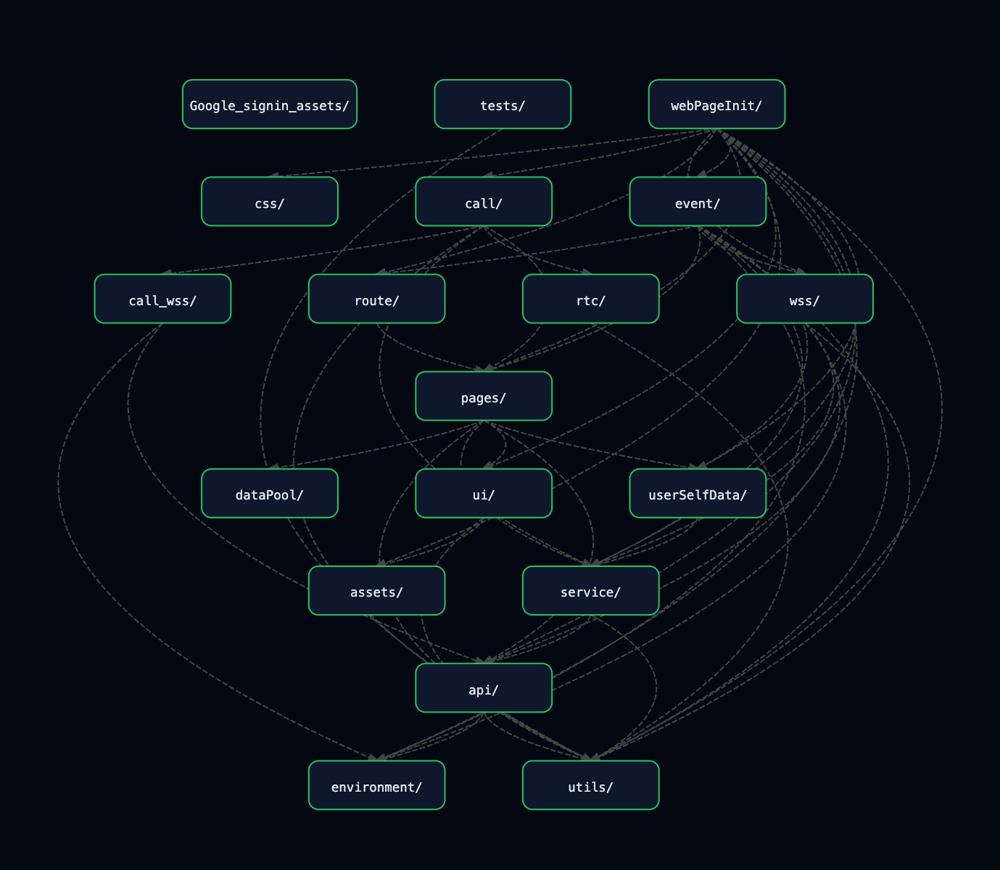
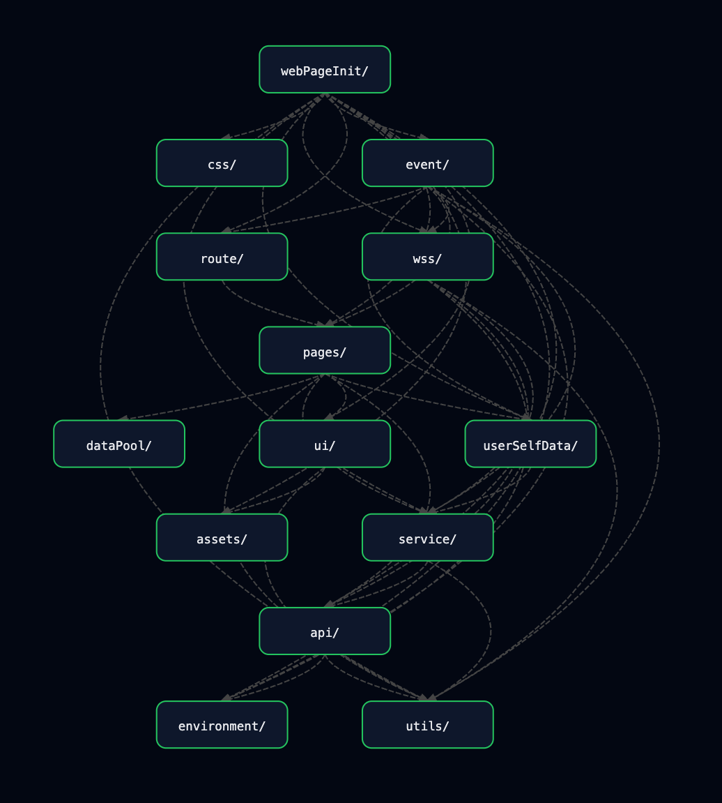
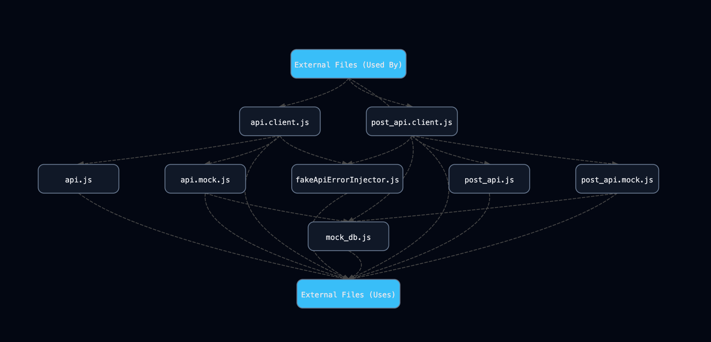
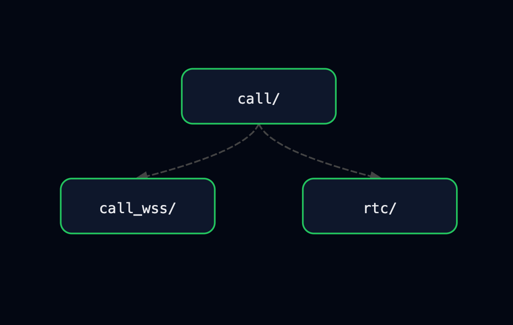
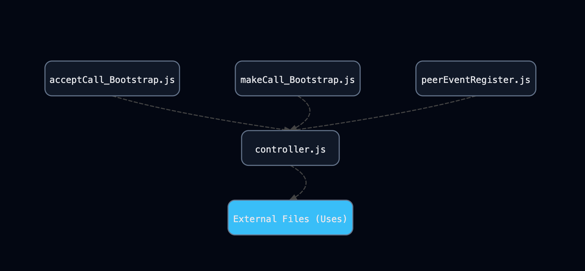
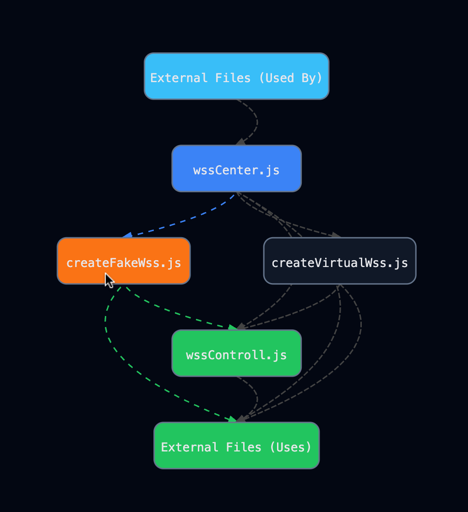
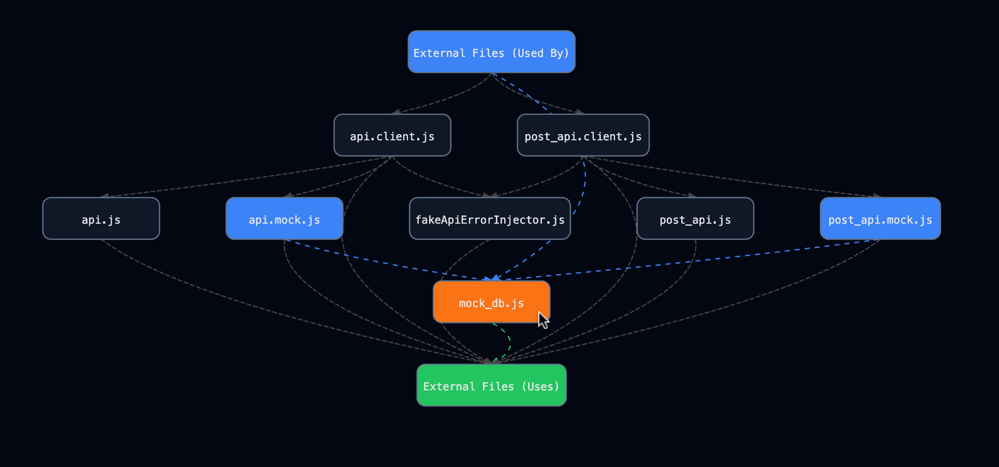

Serendilang is a language exchange social platform that supports real-time video calls, text-based chat, post creation, likes, and friend connections.
At present, Serendilang is implemented as a web-based application.
The remainder of this document is organized as follows:
As the platform evolves, Serendilang has grown into a system with significant complexity,
involving multiple interacting components and real-time features.
The system currently consists of over 25,000 lines of code, reflecting a substantial level of functional and architectural complexity.
These challenges motivate the architectural decisions described in the following sections.
To address these challenges, the front-end system is built using React, along with HTML, JavaScript (ES6 modules), and TailwindCSS, following a set of self-defined architectural conventions. The project is bundled and served using Vite.
The front-end system is modeled as a state machine, where state transitions are triggered by:
All state-changing events are unified and decoupled through a centralized event system: eventBus.js.
The implementation is as follows:
const listeners = {};
export const eventBus = {
on(event, callback) {
if (!listeners[event]) listeners[event] = [];
listeners[event].push(callback);
},
off(event, callback) {
if (!listeners[event]) return;
listeners[event] = listeners[event].filter(cb => cb !== callback);
},
emit(event, ...args) {
if (!listeners[event]) return;
listeners[event].forEach(cb => cb(...args));
}
};
During application initialization, all relevant events are registered and mapped to their corresponding handlers.
UI components are kept lightweight and decoupled—they only detect user interactions and emit events via eventBus.emit(...), without directly handling business logic.
To maintain a clear separation of concerns, the system adopts an architecture where UI component hook parameters are treated as derived copies of a subset of the system state, rather than the source of truth.
In this design, all UI-related state is maintained in a centralized system layer outside of React components.
The hook parameters inside each UI component act only as synchronized snapshots of that state.
When the underlying system state changes, a dedicated update mechanism propagates those changes to the corresponding React components by updating their hook parameters, triggering re-rendering.
In other words, the UI does not own state—it simply reflects it:
UI ≈ f(system state), where hook state is a synchronized replica, not the source of truth
To bridge the system state and the UI layer, a dedicated adapter module, uiStateAdapter.js, is used.
The following are the two most important functions in uiStateAdapter.js:
export function subscribe(id, handler) {
if (!handlers.has(id)) {
handlers.set(id, new Set());
}
handlers.get(id).add(handler);
if (id in globalState) {
handler(globalState[id]);
}
return () => {
const set = handlers.get(id);
if (!set) return;
set.delete(handler);
if (set.size === 0) {
handlers.delete(id);
}
};
}
export function updateState(id, next) {
const prev = globalState[id];
const value =
typeof next === 'function'
? next(prev)
: next;
globalState[id] = value;
const set = handlers.get(id);
if (set && set.size > 0) {
for (const handler of set) {
handler(value);
}
}
}
Every UI component (built with React) uses the following function defined in StateViewBase.jsx.
This allows non-UI modules to directly update the component’s hook state by calling updateState from uiStateAdapter.js.
import { subscribe, getState } from "../utils/uiStateAdapter.js";
import React, { useEffect, useMemo, useState } from "react";
import { ensureUiI18nRuntime } from "./i18n/uiI18nRuntime.js";
export function useSubscribedState(id, fallback = {}) {
const [state, setState] = useState(() => getState(id) || fallback);
useEffect(() => {
ensureUiI18nRuntime();
}, []);
useEffect(() => {
return subscribe(id, (next) => {
setState(next || fallback);
});
}, [id]);
return state;
}
All .html files for the application are centrally placed in the webPages directory.
The diagram below illustrates the complete js/jsx system that is utilized by webPages.Each .html file within webPages primarily relies on an entry .js file located in webPagesInit. This entry file serves as the initialization point, responsible for bootstrapping the corresponding page and connecting it to the underlying system architecture.

In this diagram, each node represents a folder.
A directed edge from node A to node B indicates that at least one file in folder A depends on a file in folder B.
The graph is topologically sorted.
Therefore, dependencies only flow downward — folders positioned lower in the diagram do not depend on those positioned above them.
This project includes voice and video call functionality.
If we exclude the call-related components and focus only on the core modules involved in standard website operation, the subgraph derived from Figure 2.1 is shown below:

webPageInit/This directory is responsible for web page initialization.
It can be considered as the entry point for each web page.
Each file in this directory handles the setup logic required when a page is loaded.
event/This module, together with utils/eventBus.js, embodies the core architectural rationale introduced in Section 1.2.1.
eventEmitter.js
This file attaches a global event listener to the entire document.
Every UI component that can trigger an event includes a dataset.actionList property—an array of action objects describing:
When a user interacts with the page (click, scroll, input, etc.), the listener reads the actionList and emits the corresponding events through the event bus.
This design allows any DOM element to emit events, even if it is not defined in ui/,
as long as it provides a valid dataset.actionList. For example, elements that are statically defined in .html files
(i.e., not managed by the React-based UI components) can still participate in the event system.
handlers/
This folder (inside event/) contains modules that register event handlers using utils/eventBus.js.
Registration here means binding event names to their corresponding handling logic within the event bus.
Through this process, each event is associated with a specific function that defines how the system should respond.
route/for the main web page, there are a menu and pages, when user touches a menu button, the main screen switch to the page that it refers. In this folder, it defines id of each page and the logics of entering and leaving a page.
wss/Serendilang is a real-time communication system. Users can exchange messages, send friend requests, receive notifications, and initiate voice or video calls.
To support this, the UI must react to server-side events immediately and consistently across all active tabs.
The responsibility of this layer is to construct and manage the application's WebSocket object.
All low-level WebSocket actions—such as connecting, sending messages, and handling incoming events—are defined within this layer.
WebSocket Design Overview
The WebSocket system implements a shared connection architecture to minimize unnecessary WebSocket connections to the server.
When a WebSocket object is created, it performs the following steps:
Leader Detection
localStorage and BroadcastChannel to determine if another tab has already established a WebSocket connection.Follower Mode
BroadcastChannel.Message Routing
Server Event Distribution
Implementation Structure
The wss/ folder contains three core modules, each responsible for a specific aspect of the shared WebSocket system:
wssCenter.js
Serves as the central manager of the entire WebSocket system.
This module maintains the global WebSocket abstraction, referred to as the Virtual WSS.
The Virtual WSS is not a native WebSocket instance created via new WebSocket(url). Instead, it represents a unified logical WebSocket interface that may internally operate in either leader or follower mode.
The Virtual WSS object is stored as a global variable within this module.
wssCenter.js is responsible for initializing the Virtual WSS, resetting or reinitializing it when necessary, and providing accessor functions to retrieve the current active instance.
By centralizing WebSocket lifecycle management and global state in this module, the system ensures consistent behavior across all tabs while avoiding redundant WebSocket connections.
createVirtualWss.js
Responsible for constructing the Virtual WebSocket abstraction (Virtual WSS).
This module exposes the createVirtualWss factory function, which creates a unified WebSocket-like interface shared across browser tabs.
The returned object behaves similarly to a native WebSocket instance from the perspective of upper layers, while internally coordinating leader–follower roles and inter-tab communication.
It acts as a wrapper that encapsulates the actual WebSocket instance, providing a consistent interface regardless of whether a real connection is used.
Upon creation, each Virtual WSS instance:
BroadcastChannel for cross-tab communication.localStorage to determine whether an existing leader is active.The module implements a leader election mechanism based on:
localStorage.BroadcastChannel.When operating in leader mode, the Virtual WSS:
WebSocket connection to the server.BroadcastChannel.When operating in follower mode, the Virtual WSS:
WebSocket connection.BroadcastChannel.This module also integrates with the event-driven system by emitting system-level events (e.g., WebSocket disconnection or leader failure) through the global event bus, allowing higher layers to react appropriately.
By encapsulating leader election, heartbeat monitoring, and inter-tab coordination within this factory, createVirtualWss.js enables a scalable, resilient, and connection-efficient WebSocket architecture without exposing its internal complexity to the rest of the application.
wssController.js
Provides the sendWssMessage and setupWssHandlers functions.
The sendWssMessage function is responsible for sending messages through a given WebSocket abstraction (i.e., the Virtual WSS).
The setupWssHandlers function registers and binds WebSocket-related event handlers to the provided WebSocket instance, enabling the system to react to incoming messages and connection state changes.
Together, these modules separate connection management, coordination logic, and application-facing control flow, allowing the WebSocket system to remain modular, predictable, and scalable across multiple browser tabs.
Benefits of This Architecture
Only one WebSocket connection per user per browser
Reduces server load and avoids duplicated connections.
Automatic multi-tab synchronization
All tabs remain state-consistent without requiring polling or extra logic.
Centralized WebSocket logic
Higher-level layers do not need to manage socket lifecycles—they simply call this layer’s methods.
Scalable for future features
Works well for messaging, notifications, and voice/video call signaling.
pages/This module forms part of the core architectural rationale introduced in Section 1.2.2.
This module is responsible for managing all UI-related state and serves as the source of truth for the front-end system.
It exposes an interface for state access and mutation, meaning that all read and write operations must be performed through its provided functions, rather than accessing the state directly.
It leverages the UI State Synchronization via Adapter mechanism introduced in Section 1.2.2 to propagate state changes to the UI layer, ensuring that rendering remains a consistent and deterministic mapping from system state.
userSelfData/This module manages and provides access to data associated with the current user,
acting as a centralized interface for user-specific state within the system.
dataPool/This module provides shared data sources that are accessed across different files within the pages/ layer.
It serves as a centralized repository for cross-page or globally relevant data, such as the online user list, ensuring consistency and avoiding redundant state duplication.
ui/This module forms part of the core architectural rationale introduced in Section 1.2.2.
It contains pure React-based UI components that are solely responsible for rendering.
These components do not handle business logic or state management, and instead rely on external state provided by the system.
service/This module provides functions for uploading and downloading data from the server.
It wraps the low-level API functions defined in api/, serving as an intermediary layer that:
This design abstracts away raw API interactions, allowing higher-level modules to operate on clean and consistent data without depending on transport-level details.
api/This layer defines low-level API wrapper functions that directly communicate with server endpoints.
Each function in this layer corresponds to a single HTTP request and is responsible only for:
The entry points of this layer are api.client.js and post_api.client.js,
which determine whether to use real API calls or mock implementations based on the environment configuration.
For development and testing, mock implementations are provided within this layer to simulate server behavior.
The environment variable VITE_APP_ENV (configured via fake_backend_env) controls the switching logic:
test → use mock functions (simulated server behavior)This design enables transparent switching between real and simulated backends, allowing higher-level modules to remain unchanged across different environments.

As illustrated in the diagram, api/ consists of:
api.client.js and post_api.client.js, which control environment-based switchingapi.js and post_api.jsapi.mock.js and post_api.mock.js, which simulate server endpointsmock_db.js) that serves as an in-memory data sourceCurrently, the API design supports only two HTTP methods: GET and POST.
Modules prefixed with api. handle GET requests, while those prefixed with post_api. handle POST requests.
The api.js and post_api.js modules validate server responses to ensure they are successful and well-formed.
If an abnormal or error response is detected, an exception is thrown.
This allows the service/ (introduced in section 2.2.9) to handle errors in a context-aware manner.
utils/This folder provides shared utility tools that can be used across all layers of the application.
One of the most important components in this layer is the eventBus, which serves as the central
event-dispatching mechanism. All parts of the application emit events and register event handlers through the eventBus, enabling a consistent event-driven architecture.
In addition to infrastructure-level utilities, this layer also includes lightweight computational
helpers. For example, calcOnlineUserScore.js provides functions for calculating priority scores
used to rank online users.
This project includes voice and video call functionality.
This section focuses on the core modules involved in the call system.
The call feature consists of components responsible for signaling, media handling, and real-time communication between users.
The subgraph derived from Figure 2.1 highlights the key modules that participate in establishing and maintaining a call session.

call/The call/ folder contains the core orchestration logic of the call system, including the definition and management of the call lifecycle.
Its main components are as follows:
controller.js
The entire call is modeled as an object. This file defines the corresponding class and provides an initialization function that creates a call engine instance and assigns it to a global variable (callEngine).
During the entire call lifecycle, only a single callEngine instance is created and maintained. This instance serves as the central coordinator of the call system, encapsulating multiple state variables and methods that are responsible for managing call states, handling events, and orchestrating the complete lifecycle of a call from initialization to termination.The methods provided by the callEngine include handling WebRTC and WebSocket reconnections, as well as managing camera activation and deactivation, allowing reconnection and media control logic to be centralized within the call engine. WebSocket event handlers (e.g., connection, message, error, and close events such as socket.onopen, socket.onmessage, and socket.onclose) are registered and managed within this file.
acceptCall_Bootstrap.js
Contains the bootstrap logic for handling incoming calls.
makeCall_Bootstrap.js
Contains the bootstrap logic for initiating outgoing calls.
peerEventRegister.js
Responsible for registering peer-related events of the WebRTC peer connection during a call session.
The corresponding event handlers delegate event processing to the callEngine methods defined in controller.js.
The internal dependencies within this directory are illustrated in the figure below.

call_wss/Provides functions for creating and managing WebSocket connections, as well as sending signaling messages required during the call process.
This module is a simplified version of the general wss/ module described in Section 2.2.4.
Unlike wss/, it does not utilize the virtual WebSocket abstraction (createVirtualWss.js),
since each user can only participate in a single call session at a time.
As a result, call_wss/ is designed specifically for call-related communication,
providing a more streamlined and focused WebSocket implementation for signaling during calls.
rtc/Contains core.js, domVideo.js, and initializePeer.js.
This folder is responsible for all WebRTC-related functionality, including peer connection creation, media stream handling, DOM binding for video elements, and WebRTC event wiring.
core.js
Provides low-level, DOM-independent WebRTC primitives.
This file defines helper functions for creating and managing RTCPeerConnection instances, acquiring local media streams, generating and setting SDP offers and answers, applying remote descriptions and ICE candidates, and tearing down peer connections.
It focuses purely on WebRTC core logic without coupling to UI elements or DOM identifiers.
domVideo.js
Contains helper functions for binding media streams to DOM video elements.
This file is responsible for attaching and detaching local and remote media streams to corresponding video elements, handling safe playback, stopping and cleaning up existing streams, and managing basic UI-related behaviors such as visibility toggling and resize-triggered autoplay.
No WebRTC signaling or state management logic is implemented in this file.
initializePeer.js
Responsible for binding WebRTC peer connection events to the internal event-driven system.
This file registers event handlers on the RTCPeerConnection instance (e.g., track events, ICE candidate generation, ICE connection state changes, and general connection state changes) and propagates these events through callEventBus, allowing higher-level components (such as the call engine) to react to WebRTC state changes without directly depending on WebRTC APIs.
The front-end communicates with the server through both the Fetch API and WebSocket connections.
As a full-stack developer, to simplify debugging and improve development convenience,
the front-end includes dedicated modules that simulate server-side behavior, including:
This allows the front-end to operate independently of the backend during development,
making it easier to test features, reproduce scenarios, and isolate issues without relying on a live server.

The diagram above illustrates the dependency structure within the wss/ module.
createFakeWss.js, which is responsible for simulating WebSocket behavior.createFakeWss.js, utilizing the mock WebSocket interface.createFakeWss.js depends on.This structure highlights how the mock WebSocket implementation is integrated into the system,
allowing dependent modules to interact with a simulated real-time communication layer during development and testing.
Both createFakeWss.js and the production module createVirtualWss.js utilize wssControll.js for WebSocket event binding.
Unlike createVirtualWss.js, which establishes a real WebSocket connection,
createFakeWss.js creates a simulated WebSocket object that does not perform actual network communication.
Instead, it emits predefined messages at configured time intervals—such as incoming call notifications or messages from other users—allowing controlled testing of real-time interaction scenarios.
In addition to simulating message reception, createFakeWss.js also interacts with the mock data layer defined in api/mock_db.js.
When simulated events occur (e.g., receiving messages from other users), corresponding data is inserted into the mock database,
mimicking the side effects that would normally be handled by the backend.
By sharing the same event-handling logic (wssControll.js) while decoupling the transport layer,
this design enables deterministic and reproducible testing of real-time features.
It allows the front-end to operate independently of the backend while maintaining behavior consistent with a real system.

The diagram above illustrates the overall structure of the api/ module, with the mock-related components highlighted.
mock_db.js, which serves as an in-memory mock database.api.mock.js and post_api.mock.js, which implement mock API functions that interact with the mock database.The mock API modules simulate server-side behavior by performing read and write operations on mock_db.js,
mimicking how real backend endpoints handle requests and return responses.
api.mock.js handles read operations from the mock database.post_api.mock.js handles write operations to the mock database.The public interface of the api/ module is exposed through api.client.js and post_api.client.js,
which abstract away whether the underlying implementation is real or mocked.
By sharing the same interface between real and mock implementations, the system enables seamless switching
between development and production environments without affecting higher-level modules.
Furthermore, fakeApiErrorInjector.js provides a mechanism for simulating server-side failures.
By injecting controlled errors into API responses, it enables systematic testing of the application's
error handling logic, ensuring that failure cases are properly managed and reflected in the UI.